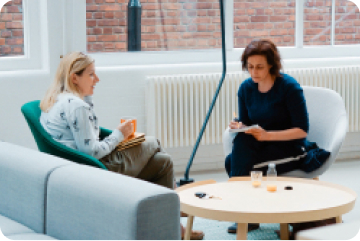
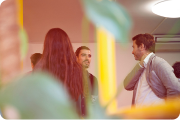
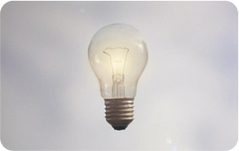

Как получить максимум от стратегической сессии
90% российских компаний живут в состоянии лебедь, рак и щука или как ежик в тумане. Происходит это потому, что в России у большинства организаций нет грамотных планов и четких договоренностей между людьми.
И Вы правильно делаете, что смотрите в сторону стратегической сессии. Это лучший инструмент для сплочения команды и определения векторов развития.
Я много лет провожу сессии и десятки раз наблюдала, как компании взлетали и набирали обороты, если грамотно использовали этот инструмент. От того, как организована сессия, как она встроена в общий процесс управления, и кто ее проводит, зависит во многом то, как будут реализовываться принятые решения, и к какому результату это приведет бизнес.
Я хорошо понимаю, что пустить внешнего человека (ведущего стратегической сессии) в святая-святых своего бизнеса - не просто. Это как с выбором врача. Он может как помочь, так и навредить. А проверить квалификацию врача неэксперту крайне сложно.
Поэтому на этом сайте я постаралась дать максимум информации, чтобы Вы смогли сориентироваться в том:
Какие стратегические сессии бывают, какие задачи они могут решать.
Что из себя представляет проект организации стратегической сессии.
В чем специфика моего подхода.
Мой опыт работы с различными компаниями и запросами с примерами выполненных проектов и отзывами.
Конечно, ни один сайт не содержит всей информации. Поэтому звоните, я помогу сориентироваться, что именно вам нужно и как грамотно подойти к организации стратегической сессии.
Какую задачу вы ставите на стратегическую сессию?
Сделать стратегические выборы
Сессия по определению целей и стратегии
Найти прорывное решение
Креативная сессия
Выявить и проработать боли бизнеса
Проблемно-ориентированная сессия
Проблемно-ориентированная сессия
Сессия по разработке тактики
Сплотить и сонастроить команду
Сессия синхронизации и командо- образования
Повысить вовлеченность персонала
Сессия по повышению мотивации и лояльности
Обучение стратегичес- кому плани- рованию
Обучающая сессия
Специфическая задача
Сессия по запросу клиента
Задача не определена
Аудит задач и проблем бизнеса
Сессия стратегического выбора
Такие сессии направлены на определление пути. Если перед вашей компанией стоит вопрос выбора из нескольких альтернатив, как именно выстраивать траекторию развития, то это лучший тип сессии. Иногда выбор стоит в отношении сразу многих вопросов, иногда сессия посвящена только одной «развилке».
В ходе сессии важно учесть максимум аспектов каждого решения, услышать все стороны и договориться о совместных решениях.
Принятые на сессии решения в конечном итоге будут определять судьбу бизнеса в долгосрочной перспективе.
Примеры ситуаций, с которыми я работала:
- Есть два бренда, нужно принять решение, концентрируемся на одном или развиваем оба?
- Есть несколько бизнес-моделей монетизации, какую выбрать?
- Выбрать темпы роста. Растем медленно но верно или берем кредиты и растем быстро, но рисковано?
- Определение стратегии управления персоналом. Например: мы оставляем токсичных сотрудников или расстаемся?
- На какие сегменты клиентов больше делать упор: с физ. лицами или юр. лицами?
- Расширять бизнес через партнерство или создавать новые функции и продукты самим?
- Выходим на новые герграфические рынки или развиваем имеющихся клиентов через новые сервисы?
Критерии успешности стратегической сессии:
Единое понимание и принятие всеми членами команды куда, как мы идем и почему.
Креативная сессия
Есть очень амбициозная задача, и нет исходных идей. Как подойти к решению? На ней используются креативные (в т.ч. ТРИЗ) инструменты. Это позволяет сделать прорыв и буквально изобрести что-то принципиально новое - то, чего не было раньше.
Такая сессия позволяет под новым углом посмотреть на имеющиеся ресурсы и возможности, получить свежий взгляд. А также получить заряд драйва и вдохновения.
Если Вы хотите встряхнуть команду, решить сложную задачу, найти свежую идею и получить уверенность, что все возможно - это то, что Вам нужно.
Примеры ситуаций, с которыми я работала:
- Как объяснить потребителям ценность здоровых (наших) продуктов?
- Как без рекламного бюджета обеспечить узнаваемость продукта?
- Как найти новые идеи для вовлеченности, если кажется, что все уже перепробовали?
- Как сделать рекламный каталог снова интересным и читабельным(«все уже было»)?
- Как сэкономить на инскассации и при этом усилить безопасность?
- За счет чего можно увеличить объем продаж в 5 и более раз?
- Как устранить брак или его негативные последствия, если нет возможности заменить оборудование?
Критерии успешности стратегической сессии:
Найдена лучшая идея! Затраченные ресурсы на поиск этой идеи окупаются многократно.
Найден новый подход к ситуации или задаче, решение которой раньше казалось невозможным.
Проблемно-ориентированная сессия
Это первый шаг к наведению порядка в бизнесе. Позволяет осмыслить и сделать ревизию всех симптомов пробуксовки бизнеса. Что сейчас болит, что требует первоочередного внимания и решения.
Внутри бизнеса проблемы существуют в разных плоскостях и разного масштаба. Что-то явно, что-то нет. Что-то является критичной помехой для деятельности, а с чем-то можно примириться. Разобраться, заменить смутное ощущение, что «что-то не так» на конкретный перечень приоритетов. Разработать мероприятия по изменениям.
Примеры ситуаций, с которыми я работала:
- Сотрудники сами признали наличие проблем и проявили инициативу их устранять.
- Низкий уровень качества сервиса. Что делать?
- Внедрение новой технологии управления. Выявить и проработать сомнения руководителей.
- Запуск проектов оптимизации бизнеса. Сессия как стартовая точка.
- Упрощение бизнес-процессов и устранение бюрократии.
- Ежегодное переосмысление и наведение порядка в бизнесе. Большая ревизия.
- Нормативные документы не работают. Что делать?
Критерии успешности стратегической сессии:
Понятно, что именно не работает, почему, и что нужно сделать, чтобы «полетело».
Снятие напряжения из-за пробуксовки бизнеса. Запустился долгожданный процесс изменений.
Сессия по разработке тактики
Амбициозная цель уже поставлена (сверху, как правило), но не совсем понятно, как ее достигать. Сотрудники могут сомневаться в адекватности цели. Разложение цели на составляющие, их проработка. Планирование выполнимых действий, обеспечивающих результат.
В рамках такой сессии команда отвечает на вопросы:
- Какие есть возможности и ресурсы?
- Что и кто должен для этого сделать?
- Каковы критерии?
- Все сомнения и риски проработали? Как их преодолеем?
Примеры ситуаций, с которыми я работала:
- Как увеличить бизнес в 2 раза, не потратив ни копейки?
- Как увеличть долю рынка в 3 раза?
- Как обеспечить экономию издержек в 5 раз?
- Как вывести на рынок новый тип супермакетов за 6 месяцев, если технически требуется 2 года?
- Как выйти на новый географический рынок, если пока мы о нем ничего не знаем?
- Как получить экомическую выгоду от интеграции ИТ-подсистем компаний холдинга?
- Как привлечь конкретного крупного клиента, если все его хотят, а он нас пока не знает?
Критерии успешности стратегической сессии:
100% вовлеченность и вера всей команды в достижимость абмициозной цели.
Четкий понятный план достижения поставленной цели.
Сессия по синхронизации и командообразованию коллектива
Актуально в ситуации «Лебедь рак и щука». Улучшение кросс-функционального взаимодействия. Используется для вновь сформированных команд (в т.ч. при смене ТОП-менеджмента). Или для устранения конфликтов и разобщенности в старой команде.
Объединение людей вокруг цели и сплочение на личностном уровне. Каждому становится понятно, почему другие себя так ведут. Выход на конструктивные договоренности.
Примеры ситуаций, с которыми я работала:
- Каждый отвечает за свой участок и не хочет работать на общий результат.
- Конфликты между подразделениями.
- Бюрократические проволочки из-за непонимания общих целей.
- Новая команда, люди друг друга не знают, необходимо быстро наладить работу.
- Поглощение, необходимость интеграции двух команд из разных городов.
- Подразделения в разных регионах не обмениваются опытом и не знают о наработках друг друга.
- Новый руководитель хочет быстро интегрироваться с новой командой.
Критерии успешности стратегической сессии:
Фраза: «Как я счастлив, что я работаю с вами!», «Как мы вообще могли работать до этого!?»
Желание сотрудничать. Все понимают зоны своей ответственности, при этом готовы гибко подходить к взаимодействию, ради достижения общей цели.
Сессия по повышению вовлеченности персонала
Зарядить команду на эффективную созидательную деятельность. Активизировать любовь к своему делу, лояльность команде, бизнесу или продукту.
Сотрудники начинают видеть цели бизнеса как свои. Отождествлять себя с компанией, а не просто ходить на работу ради денег. Начинают глубже осознавать смысл в ежедневной даже рутинной деятельности. Искренняя вовлеченность вместо лозунгов и формальных планов. Эта сессия - «разговор по понятиям», «по душам», о том, кто во что верит и почему. Кого что заряжает и почему. Кто как воспринимает компанию и команду. Как можно повысить мотивацию и вовлеченность.
Примеры ситуаций, с которыми я работала:
- Нет энтузиазма, нет огня в глазах.
- Отношение сотрудников к работе как месту «отбывания» заменить на любовь к своему делу.
- Сделать так, чтобы люди с душой вкладывались в работу.
- Осмысление итогов года через индивидуальную и искреннюю рефлексию каждого.
- Разработка личных стратегий - связать личные цели и цели бизнеса.
- Повышение нематериальной мотивации персонала.
- Разработка корпоративных ценностей.
Критерии успешности стратегической сессии:
100% уверенносить каждого, что достижение целей бизнеса способствует реализации его собственных интересов. Снова горят глаза. Высокая вовлеченность и мотивация.
Обучающая сессия по стратегическому планированию
Когда в компании не выстроена система планирования, планы отстствуют, не согласуются друг с другом или не выполняются. Берем вашу конкретную цель и на ее примере учимся планировать. Участники видят свои типичные ошибки на актуальных примерах. После сессии Ваши руководители будут способны с новым уровнем качества ставить цели и планировать свою деятельность.
Вторая важная тема такой сессии - умение держать фокус внимания на выбранных приоритетах. Нужно не только уметь ставить цели, но и держать на них внимание, даже занимаясь текучкой.
Примеры ситуаций, с которыми я работала:
- Квартальные цели не достигаются. Есть гипотеза, что дело в навыках планирования.
- Проекты оптимизации не двигаются. Есть гипотеза, что стоят некорректные цели.
- Разработка системы целей и KPI (с последующей самостоятельной проработкой).
- Есть 15 идей улучшений, с чего начать и как такие проекты реализовывать.
- Ежегодное планирование. Перейти на новый более эффективный подход.
- От подхода «копать примерно тут» перейти к точным к конкретным планам.
- Недостаточно системности в подходах к управлению бизнесом у руководителей.
Критерии успешности стратегической сессии:
Участники поняли свои типичные ошибки в процессе целеполагания и планирования. Новый цикл планирования готовы запускать на новом качественном уровне.
Сессия по запросу заказчика
Проводится для нестандартных задач, к которым «не понятно как подступиться».
Перечень вопросов, которые могут быть успешно решены с помощью стратегических сессий, не ограничен, он действительно огромен. Это могут быть частные очень специфические технические вопросы или глубоко философские или морально-этические темы. Вне зависимости от Вашего запроса обычно результаты превосходят ожидания. Это обеспечивается за счет детального обсуждения запроса и разработки уникального сценария. По моему опыту решения можно найти даже для самых неочевидных вопросов. А бонусом будет сонастройка и вовлеченность команды.
Примеры ситуаций, с которыми я работала:
- Как обеспечить конфиденциальность вип-пассажиров при посадке в самолет.
- Потенциальное закрытие тысяч киосков с газетами и журналами из-за развития интернет.
- На уровне холдинга поиск возможностей использования биг-дата.
- Профессиональное деловое сообщество - обмен опытом и знакомство, нетворкинг.
- Анализ и пересмотр принципов чрезвычайного реагирования на атомных станциях.
- Как задействовать простаивающие мощности. Разработка нового продукта.
- Новая бизнес-модель розничной сети. Проектирование устройства магазина.
Критерии успешности стратегической сессии:
Критерии определяются индивидуально с Заказчиком исходя из поставленной задачи. Согласованные критерии вносятся в договор с ведущим.
Если задача еще не ясна
Если запрос: «Мы хотим чего-то совместного, интересного и полезного, но не знаем что именно». Здесь как со здоровьем: «Нет здоровых, есть недообследованные». По итогам предварительной работы станет ясно, какие актуальные задачи есть у Вашего бизнеса. Над этими задачами будем работать с гарантированным результатом на сессии.
Мы проговорим ожидаемые результаты, и Вы сами примете решение, стоят ли эти результаты затрат на проведение.
Примеры ситуаций, с которыми я работала:
- Проблемное внедрение ERP системы. Переосмыслить подход.
- Семейный офис одного из российских миллардеров - как внутри самим развиваться?
- Заказчик обратился, потому что «Стратсессия - это модно! Да и бюджет у нас есть».
- Задача развития спущена сверху, заказчики сами не знают, что именно нужно.
- Задача понятна, но необходимо продать ее управляющей компании «в другом свете».
- Есть бюджет, хотим что-то полезное, чтобы дали бюджет в следующий раз.
- Необходимо статусное мероприятие, чтобы показать, какие мы крутые.
Критерии успешности стратегической сессии:
Вы точно поймете, что Вам нужно. Определены критерии успешного результата. Ваше удивление, почему Вы раньше именно так задачу не ставили и не решали ее.
Результаты качественно проведенной стратегической сессии
До
Рассогласованность команды и отстутствие четких векторов движения
- Нечеткое видение будущего
- Конфликты между сотрудниками
- Разобщенность коллектива
- Низкие показатели эффективности
- Сомнения в том, что двигаемся правильно
- Недополученные выгоды
- Излишние затраты ресурсов
После
Сконцентрированные усилия всей команды на реализации значимых приоритетов
- Лояльность команды бизнесу
- Уверенность в отношении целей и задач
- Единое и согласованное видение командой
- Единое понимание проблем, задач и путей их решения
- Согласованные действия всей команды ради общей цели
- Новые идеи и решения
- Четкие цели и планы
Из чего состоит проект стратсессии?
Подготовка

-
Встреча с первым лицом и руководителями для уточнения вопроса.
-
Разработка сценария и определение формата.
-
Организационная подготовка сессии.
Прочитайте дополнительные материалы по теме:
- (1) Примеры сценариев стратегических сессий
- (2) Требования к помещению
Проведение
-
Длительность от одного дня до серии сессий на протяжении нескольких месяцев.
-
От 6 до 300 участников. При больших форматах привлекаются ассистенты (участие руководителя обязательно).
-
Перерывы каждые 1,5-2 часа.
Результат

-
Предоставление отчета о проведенной сессии с выводами и рекомендациями.
-
Пост-сопровождение до 1 года по реализации принятых решений.
Прочитайте дополнительные материалы по теме:
- (3) Примеры отчетов после стратсессии
- (4) Поддержка команды после стратсессии
Этапы сессии
1
Запуск
2
Фокуссировка внимания
3
Поиск решений
4
Проработка сомнений
5
Разбработка планов
6
Подведение итогов
Задачи этапа
В самом начале необходимо настроить людей на процесс, создать располагающую к работе атмосферу. У каждого участника должна появиться ясность, куда он попал, что от него ожидают, а также спокойная уверенность, что любые его идеи и мысли будут приняты конструктивно. Ведь ожидание критики удерживает многих от высказываний. Поэтому от первого этапа во многом зависит то, как пройдет вся сессия.
Инструменты:
-
Разминки на знакомство и сплочение
-
Презентации спикеров
-
Правила и регламент
-
Вводные опросы и голосования
-
Мотивационные активности
Задачи этапа
Каждый участник приходит на сессию со своим пониманием приоритетов и текущей ситуации. Важно синхронизировать это понимание, чтобы все сфокусировались на решении конкретных задач. Данный этап необходим, чтобы выявить и проработать различия во мнениях относительно приоритетных проблем или целей.
Инструменты:
-
Анонимные и открытые опросы
-
Фасилитация обсуждения
-
Голосование за приоритетные вопросы
-
Формирование групп
Задачи этапа
Это основной этап сессии, так как именно здесь рождаются решения. Я предлагаю участникам алгоритм работы в зависимости от специфики задачи. Затем группы ищут решения и оформляют их в соответствии с предложенным шаблоном.
Инструменты:
-
 Стратегия голубого океана
Стратегия голубого океана -
Анализ процесса по схеме
-
Причинно-следственный анализ
-
ТРИЗ-инстументы
-
Визуализация решений на флипчарте
Задачи этапа
Этот этап нужен, чтобы проверить качество решений, доработать их за счет общего обсуждения и выявления сомнений. Также важно вовлечь остальную команду в реализацию решений, чтобы не было «пассивно-слушающих» или «ожидающих своей очереди для выступления». Для этого группы презентуют свои решения и получают обратную связь от других участников.
Инструменты:
-
Классическая презентация групп с обсуждением
-
Прототипирование и тестирование
-
Голосования по опорным вопросам
-
Видео-ролики от групп
-
Структурированное обсуждение по рискам
Задачи этапа
Часто на сессиях появляется много хороших идей, но не всегда очевидно, как их воплощать в жизнь.На данном этапе мы определяем конкретные сроки, ответственных и ближайшие шаги.
Инструменты:
-
Формирование списка открытых вопросов
-
Определение ближайших шагов
-
Создание протокола и его согласование
-
 Живой диалог с первым лицом
Живой диалог с первым лицом -
Таблица «Сроки-Ответственные-Результаты»
Задачи этапа
Участники должны выйти с мероприятия заряженными, вдохновленными, с четким пониманием, что необходимо делать для реализации целей, с ощущением поддержки команды и руководства. Два измерения вовлеченности «Хочу» и «Могу» для каждого участника должны быть на максимуме по принятым на сессии решениям. Эмоциональная точка мероприятия должна быть сильной, звонкой, резонирующей еще долгое время.
Инструменты:
-
Круг индивидуальной рефлексии
-
Детальная обратная связь в группах
-
Благодарности и пожелания
-
Гуляющий микрофон (по одному слову каждому)
-
Завершающий опрос
Мой подход и во что я верю
Команда –
как оркестр
как оркестр
Член команды
как музыкант
с определенной партией для конкретного инструмента
как музыкант
с определенной партией для конкретного инструмента
Выбранная стратегия - как стиль и мелодия (рок, поп, классика...)
Я вижу команду, как оркестр, управляющего как дирижера, а себя как камертон,
который помогает
сонастроить
музкантов
и инструменты.
Только согласованная
команда сможет
сыграть шедевр.
который помогает
сонастроить
музкантов
и инструменты.
Только согласованная
команда сможет
сыграть шедевр.
Стратегическая сессия для организации - словно подготовка перед концертом.
Ведь успех бизнеса - это то же самое, что апплодисменты за прекрасное выступление оркестру. Рынок признает, что ваши продукты и услуги - лучшие и готов за них платить. Но способна ли Ваша команда «сыграть шедевр», достойный признания?
Представьте, что в оркестре скрипка играет одну мелодию, а барабан другую, виолончелист не имеет нот, а трубач играет не в той тональности. Все заняты, куча усилий, нервов, но мало результата. Большинство команд, которые я вижу, имеют признаки такого рассогласованного оркестра. Все ресурсы есть, но потенциал не используется по максимуму.
Стратегическая сессия поможет подготовить команду и «выступление» на рынке. А я как камертон помогаю сонастроиться, сыграть шедевр и получить бурные апплодисменты в виде лучшего бизнес-результата!
ТОП-менеджер
- как дирижер
- как дирижер
Результат работы
и признание рынком -
как овации
и признание рынком -
как овации
План - как ноты -
у каждого свои,
но согласованные
с общей мелодией
у каждого свои,
но согласованные
с общей мелодией
Самое важное о моем подходе или почему это того стоит
Вникаю в специфику
Провожу интервью со всеми основными руководителями и не жалею времени на то, чтобы разобраться в ситуации.
Проявляю замалчиваемое
Важно избежать формальных договоренностей, в которые никто не верит. Эмоции и настроения - важный фокус внимания на стратсессии.
Предлагаю экспертное мнение
У меня большая «насмотренность бизнесов». Это позволяет сократить время, если решения для отдельных задач уже есть.
Довожу до результата
Я работаю на результат. Результаты прописываются в договоре и являются основным ориентиром в ходе сессии.
Вдохновляю и адекватизирую
Можно витать в облаках или утонуть в деталях. На сессии важно мечтать и важно заземляться. Моя роль - обеспечить баланс.
Мои инструменты
Фасилитация
Чтобы выжать максимум результата из группы, я использую известные приемы или создаю новые: World cafe, Openspace, Поток идей, работа в группах и т.д.
Модерация
Чтобы обеспечивать четкую структуру сессии,
я применяю немецкую технологию модерации - с цветными карточками и четким сценарием работы.
Визуализация
Для наглядности и простоты восприятия я использую электронную систему голосования и визуализацию решений групп на флипчартах и карточках.
Бизнес-инструменты
Я использую огромную базу знаний с инструментами бизнес-анализа и прогнозирования. Например, стратегию голубокого океана, 7S и многое другое.

Инструменты ТРИЗ
Если кажется, что задача не имеет решения, я использую инструменты ТРИЗ. Это позволяет выйти из шаблонного мышления и найти новые идеи.
Работа с эмоциями
От расстановки мебели до вовлечения сопротивляющихся участников. Эмоции во многом определяют результат стратсессии.
Сессия — не волшебная таблетка. Если хотите получить результат, обеспечьте реализацию принятых на сессии решений. Лучше всего — с помощью пост-сопровождения в формате групповой проработки или индивидуальной работы.
Примеры выполненных проектов
Названия компаний скрыты в целях соблюдения принципов конфиденциальности.


Обо мне
Признание коллегами
Бизнес-тренер года в России 2017 г. по версии Trainings.
- Победитель трех всероссийских конкурсов бизнес-тренеров 2009-2011 гг.
- Номинант Премии тренер года 2012.
- Победитель премии Trainings Тренер года 2017.
- Лидер сообщества бизнес-тренеров и консультантов.
- Авторскими методиками и сценариями программ пользуются более 250 ведущих по всей стране.
Доверие заказчиков
Больше половины проектов по рекомендациям Заказчиков, т.к. результаты сессий превосходили ожидания.
- Опыт реализации десятков проектов изменений (от стратегии до проработки мелочей).
- Опыт стратегического и организационного развития крупных компаний.
- Личная сила и психологическая зрелость ведущего.
- Клиенты даже с опытом стратсессий и у других ведущих возвращаются повторно.
- Процент реализации принятых на стратсессии решений выше, чем в среднем по рынку.
Доверие участников сессий
99% довольных участников, отмечают экспертность, практичес- кую пользу и душевную атмосферу.
- Четкая структура обсуждений и прозрачность решений.
- Внимание каждому участнику, индивидуальный подход.
- По отзывам динамика и атмосфера сессии лучше чем у других ведущих.
- Душевный подход к людям и деловым вопросам.
- Интересный, насыщенный, легкий и результативный процесс.
Условия и стоимость
Стоимость 150 000 руб. за тренинг-день при стандартной численности до 25 человек.
Обязательна предварительная встреча с руководителем или собственником (основной заказчик).
В стоимость входит:
-
Интервью с руководителями для определения целей сессии.
-
Разработка сценария с учетом специфики и компании и корпоративной культуры.
-
Подготовка модерационных материалов.
-
Проведение сессии.
-
Рекомендации по дальнейшим действиям после сессии.
Для больших форматов по длительности или количеству участников стоимость обсуждается индивидуально
Зал мероприятия согласуется заранее.
Скачать требования к помещению
Статьи, видео и полезные материалы
Статьи
Стартегическая сессия. Инструкция по применению
Типичные ошибки в проведении стратсессии
Как провести стратсессию без привлечения ведущего
Как развивать стратегическое мышление
Про бюрократию и попытки с ней справится

8 полезных идей для преодоления проблем и препятствий
Выдержка из маленькой книги о больших приоритетах
Полезные видео и статьи
показать больше
Видео
О стратегических сессиях
Про стратегическое мышление
Креативная сессия для ВкусВилл
Живые отзывы о стратегических сессиях с Маргаритой